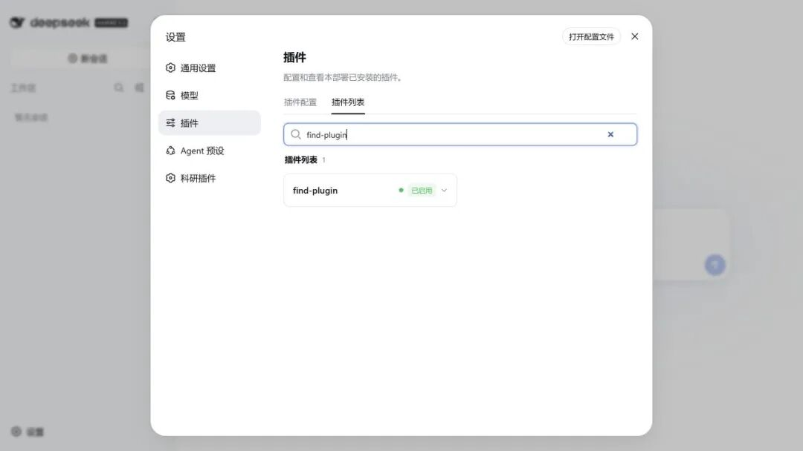
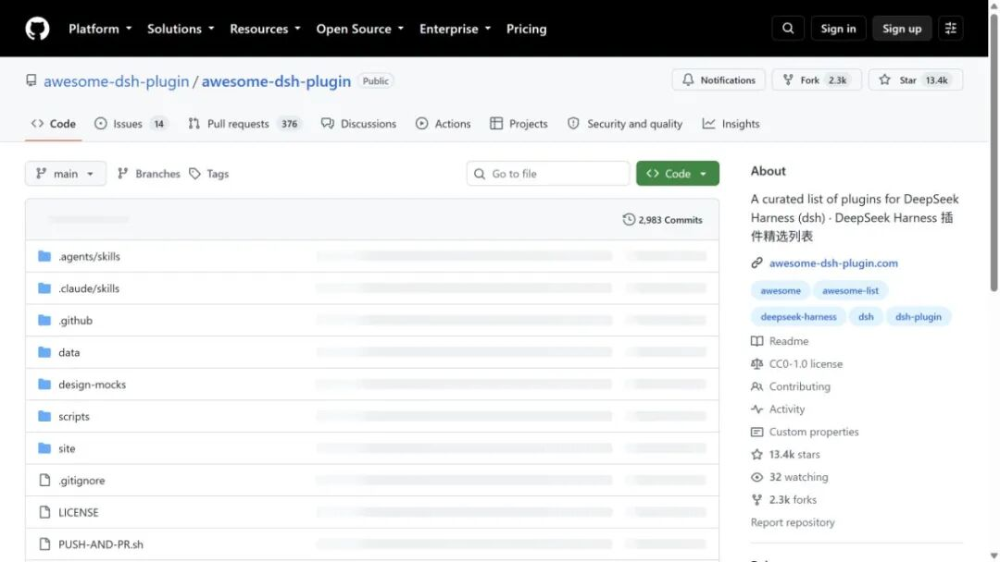

如果你平时用 DeepSeek 查文献、改代码、整理数据，可能已经习惯了“提一个问题，等一段回答”。DeepSeek Harness 想做的是另一件事：把模型放到本地工作区里，让它读文件、运行命令、调用工具，并把一次任务留下可追溯的过程。
这篇只讲一条能跑通的 Windows 路线：启动 Web 端、配置自己的 API Key、装上科研插件，再用优选清单找扩展。
01
先弄清楚：它适合做什么
Harness 不是另一个聊天窗口。它需要一个“工作区”——也就是允许它读取和修改的文件夹。对科研人来说，这可以是一个新建的项目目录，里面放着数据说明、分析脚本、文献笔记和输出文件。
02
启动：从一个工作目录开始
先安装 Node.js 的稳定版。这里把两种命令一次说清：npx和npm都来自 Node.js 的 npm 工具链，不是两个不同的软件。
官方快速试用命令是下面这一条：它会直接运行 npm 上的 DSH 包，但不会把dsh命令长期装进系统路径。关掉服务不等于删除 Harness 的本地配置；只是下一次仍要写完整命令。
npx @deepseek-ai/dsh web
如果只是想先看看界面，用npx最省事。但本文后面还要安装插件，对新手更推荐一次全局安装：以后启动和装插件都只需输入dsh，不容易把命令写乱。
npm install -g @deepseek-ai/dsh
dsh web
第一次运行会下载所需组件。终端出现本地地址后，在浏览器打开它；若默认端口被占用，可以追加--port 3081换一个端口。
npx @deepseek-ai/dsh web --port 3081
这次实测中，服务正常启动后输出了本地 Web 地址。浏览器打不开，并不一定是安装失败：先复制终端打印的http://127.0.0.1:端口号到浏览器地址栏试一次。
03
填 Key，但别把 Key 填进文章或脚本
首次进入会弹出模型配置，也可以从左下角“设置 → 模型”进入。选择 DeepSeek 官方模型，粘贴自己的 API Key，保存即可。
Key 只应该留在本机的配置界面或当前终端环境中：不要发进群、不要截全屏、更不要写进 R、Python 或项目的公开仓库。配置完成后，选择刚才新建的测试工作区，再新建会话。第一条任务可以很小，例如：
先看它如何理解目录，再让它写代码或改文稿。这个顺序很省心。
04
科研插件：先装一个“科研插件市场”
基础 Harness 更像一个可扩展的壳。科研工作中常用的文献检索、引用、Zotero、论文阅读和 LaTeX 能力，大多来自社区插件。
实测安装dsh-research的命令如下：
powershell
dsh plugin --profile web add dsh-research
安装完成后，关闭当前 Web 服务（在命令行中按Ctrl + C），再重新执行dsh web。这一点很重要：插件包已经下载，并不等于正在运行的 Web 进程已经加载它。
重启后，设置栏会出现“科研插件”。在这里可以按“文献检索与阅读”“文献管理与引用”“科研工作台”“写作与评审”筛选插件。
建议第一次只加一个与你最缺的环节直接相关的插件。比如，文献多就先看检索与 Zotero；论文写作多就先看引用和 LaTeX。装得越多，不代表工作流越顺。
05
不知道装什么？让 Harness 帮你找
另一个值得装的是dsh-find-plugin。它不是科研插件本身，而是一个插件发现工具：重启之后，可以直接在会话里问它“找一个能管理 Zotero 的插件”或“找一个适合论文 PDF 阅读的扩展”。
powershell
dsh plugin --profile web add dsh-find-plugin

它能把“翻 GitHub 找命令”的过程缩短一些，但最后的决定仍在你手里：看项目来源、最近更新、兼容版本和所需权限，再安装。
06
Awesome DSH Plugin：优选清单，不是一个必须安装的包
这里再补一个很适合收藏的入口：Awesome DSH Plugin。它是社区维护的 DeepSeek Harness 插件精选清单，按界面增强、工具、自动化、通知、开发运行时等类别整理。

它的正确打开方式是：先在清单里确定你需要的功能，再进入具体项目的 README，复制该项目给出的dsh plugin --profile web add ...命令。不要把“精选清单”误当成一个功能插件，也不要根据名称相似就随手执行安装命令。
值得优先看的方向有三类：
07
插件装得快，审查不能省
第三方插件会跟随 Harness 在本机运行，可能访问文件、网络和凭据。无论它出现在科研市场、优选清单还是搜索结果中，收录都不等于安全认证。
安装前至少做三件事：确认仓库来源；阅读 README 的权限和依赖说明；一次只装一个，重启后确认功能正常。遇到 GitHub 源码插件提示allowBuilds时，不要条件反射地同意，先看它为什么需要构建脚本。
08
不想折腾命令行，还有一条路
如果你只是想尽快把科研工作流跑起来，可以直接在 Codex 新建一个任务，说明你的系统、工作目录和目标，例如：
它可以把环境检查、安装、报错定位和验证串起来。需要注意的是：API Key 仍应由你本人在本机配置页输入；任何工具都不该替你保存或转发密钥。
如果你希望有人代为完成环境安装、插件配置，或需要 ChatGPT 订阅协助，可在公众号后台回复“安装”或“订阅”获取帮助。
◇ ◆ ◇
相关链接：
DeepSeek Harness 官方仓库：
https://github.com/deepseek-ai/deepseek-harness
DeepSeek Harness 官方使用指南：
https://github.com/deepseek-ai/deepseek-harness/blob/master/docs/user/guide/index.md
dsh-research 科研插件市场：
https://github.com/dsh-research/dsh-research
Awesome DSH Plugin 精选清单：
https://github.com/awesome-dsh-plugin/awesome-dsh-plugin
dsh-find-plugin 插件发现工具：
https://github.com/awesome-dsh-plugin/dsh-find-plugin